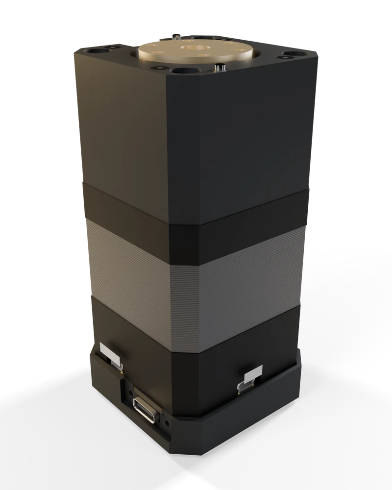
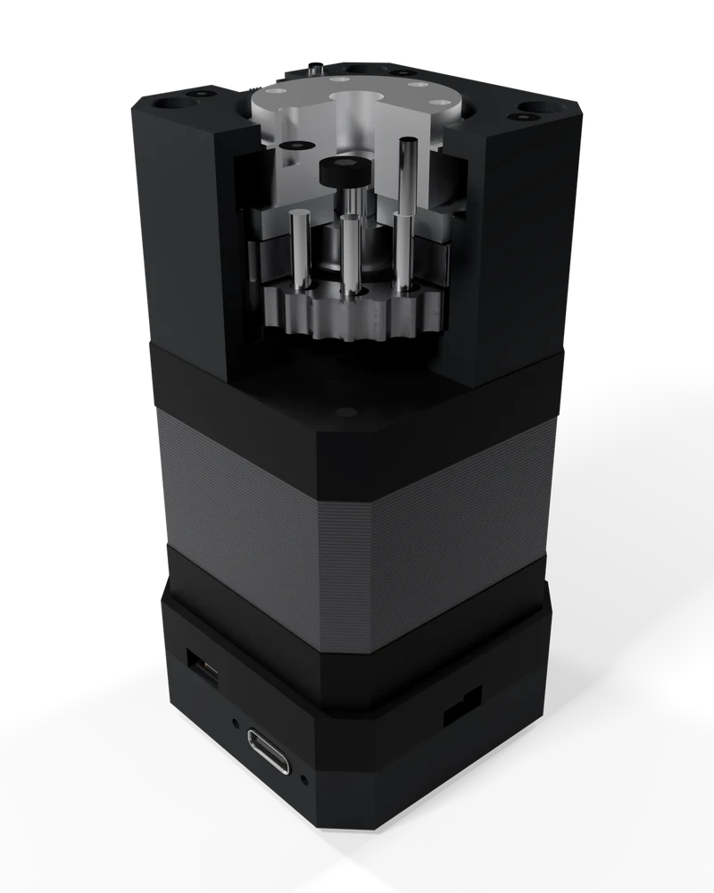
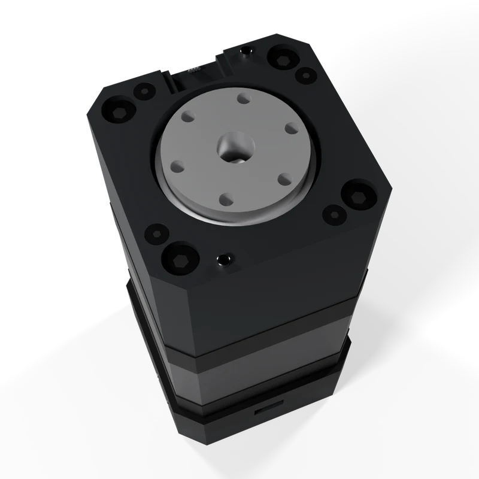
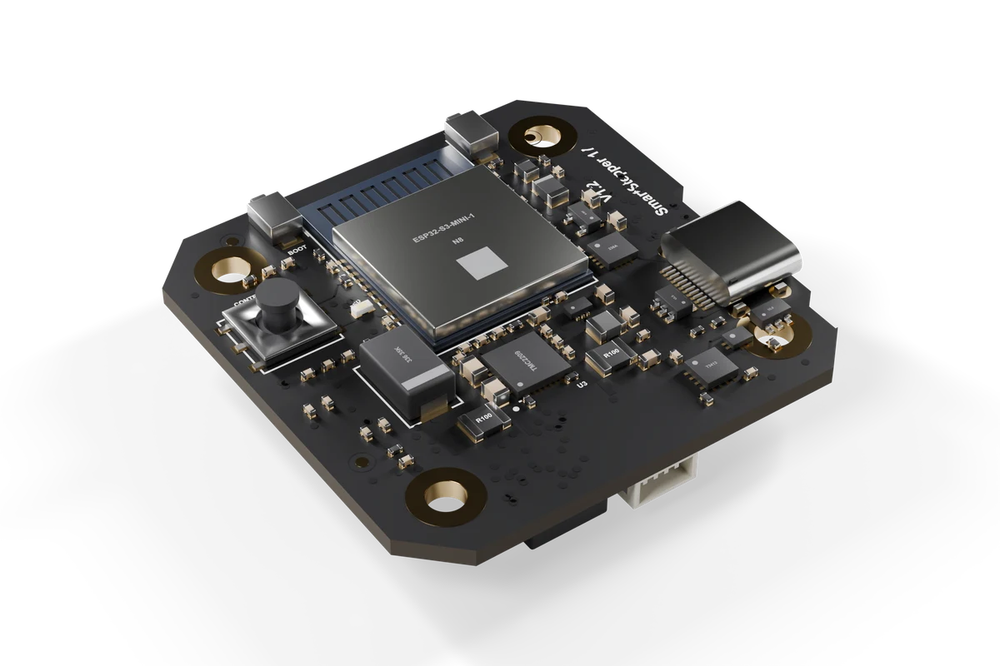

SmartStepper 17
A closed-loop NEMA 17 that runs on a USB-C charger and sets up in a browser. Add the 25:1 metal cycloidal and it becomes a robot joint.
This device has not been authorized as required by the rules of the Federal Communications Commission. This device is not, and may not be, offered for sale or lease, or sold or leased, until authorization is obtained.

Output flange · M3 bolt circle, dowels 25:1 cycloidal · 42 mm square NEMA 17 · flying-lead or socketed Rear unit · controller, 45.3 mm square USB-C · PD, USB, CANA stepper that knows where it is.
Closed loop
A 14-bit magnetic encoder (16,384 counts per turn) watches the shaft, so a stall is reported instead of silently losing position.
USB-C power
Any USB-C Power Delivery charger supplies 5 to 20 V. The same port carries USB to a laptop and CAN to the next node.
Browser setup
The Checkmate app runs in your browser: calibrate, set current, jog, and plot angle, current and temperature live.
Your NEMA 17 or ours
Works with flying-lead or socketed NEMA 17 motors (adapter included). The leads plug into the rear unit; closed loop needs a rear shaft for the encoder magnet.
The motor shaft is the output.
SmartStepper 17 · Direct is the complete node with no reducer: the same closed-loop board and calibrated NEMA 17, housed, with the shaft driving your load.
Full motor speed
No gearbox between the motor and the load. For turntables, slides, fixtures and printer or CNC axes that need speed more than torque.
Nothing to wear
No reducer means no backlash from gearing and no gear stage to service. The encoder watches the shaft that does the work.
Geared later
The 25:1 reducer bolts to the motor face. A direct node becomes A1.3 for the price difference, and keeps its identity and calibration history.
List price $169. Direct-drive output covers and frames are in design.
A metal cycloidal inside the motor’s own footprint.
Two cycloid discs share the load across many rollers, which keeps the joint stiff and low in backlash without growing past the 42 mm outline.
- Lost motion about 7 arcmin (estimate), measured per unit
- Torque targets 4 N·m continuous, 8.5 N·m peak
- Output encoder fitted as standard
- Output face with M3 bolt circle and dowel holes

Output carrier Cycloid discs × 2 Motor body, exposed Controller boardNEMA 17 · flying leads
Controller boardNEMA 17 · flying leadsDrops into a printer, a CNC or an arm.
Drive it over CAN from Python, or take STEP/DIR from Klipper, Marlin or GRBL boards on the AUX port. To Klipper it is an ordinary external driver.
- Qwiic port for I²C sensors and displays
- AUX: STEP/DIR, endstop, UART or sync
- Chain nodes over CAN on the same cable
- An anodized aluminum Cable Clip holds the USB-C cable in place (in the box)
| SmartStepper 17 · Direct | SmartStepper 17 · 25:1 | |
|---|---|---|
| Motor | NEMA 17, pre-mounted and calibrated. Board: your own flying-lead or socketed NEMA 17 (adapter included) with a rear shaft for the encoder magnet | Same, with 25:1 metal cycloidal |
| Size | 45.3 mm square rear unit | 42 mm square gearbox · 45.3 mm square rear unit |
| Controller / driver | ESP32-S3 (USB; Wi-Fi and BLE off by default, enabled in the app) / TMC2209 | Same |
| Encoder | MT6701, 14-bit, motor shaft | Same, plus output encoder |
| Power | USB-C PD sink, 5–20 V | Same |
| Bus | CAN 1 Mbit/s on the USB-C cable | Same |
| Ports | USB-C · Qwiic · AUX 4-pin JST-SH | Same |
| Backlash | — | ~7 arcminEstimate |
| Torque | Motor-dependent, measured per unit | 4 N·m cont. / 8.5 N·m peakTarget |
| Software | Checkmate browser app · Python SDK · Klipper STEP/DIR guide | |
| Compliance | FCC Part 15B testing before shipping · US only at launch | |
CAN needs a full-featured USB-C cable; charge-only cables don’t carry it. Targets are design goals; every unit ships with its measured test card.
The node from other angles.


